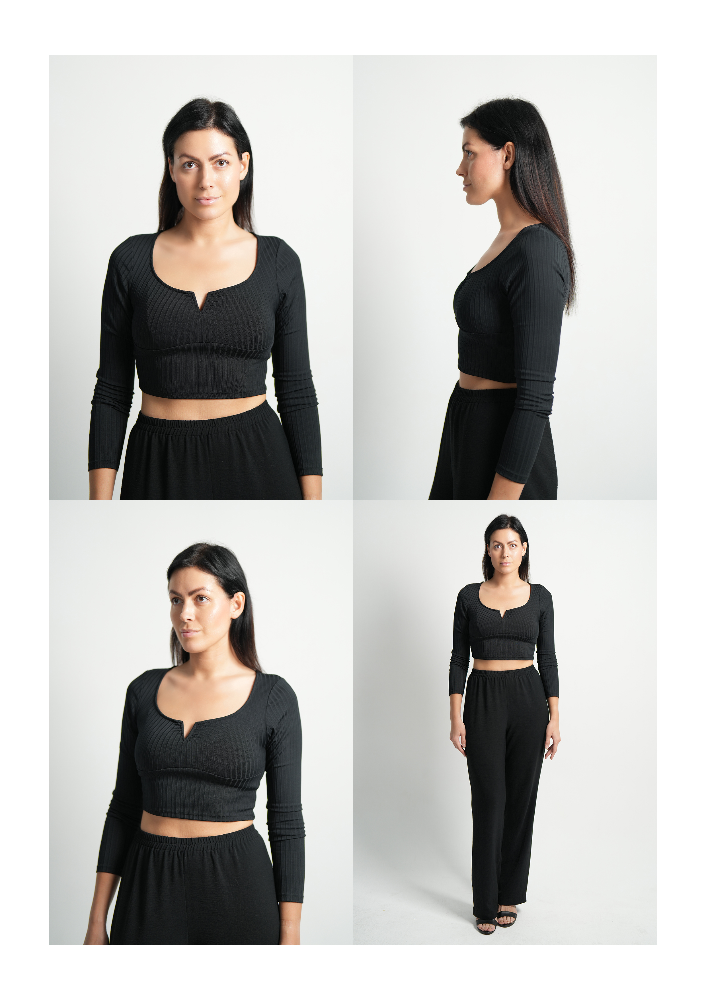

Model digitals and a model portfolio are both used to present you, but they answer two different questions.
Digitals show an agency what you look like right now. A portfolio shows how you perform in front of a camera.
That distinction matters. A beginner can spend time and money building a polished portfolio, only to discover that the agency's first application asks for simple, recent photographs against a plain wall. Another model may submit clean digitals successfully, then need stronger portfolio images before clients can understand their range.
There is no single upload formula followed by every Dubai agency. Bareface currently asks applicants for four photographs, including headshots against a white wall plus full-body and half-body views. Diva Dubai uses a different profile system: its current guidance asks for a strong headshot first, the first ten images in portrait orientation, and additional video material for polaroids, catwalks or showreels. The useful lesson is not that one format is correct. It is that the target agency's current instructions are the brief.
Here is how to prepare the right material without confusing digitals, portfolio images and comp cards.
The short answer
| Material | What it shows | Styling and editing | When it is useful |
|---|---|---|---|
| Digitals or polaroids | Your current face, hair, proportions and natural appearance | Plain, current and unretouched | Initial agency applications, updates and castings |
| Model portfolio | Your range, expression, movement and ability to carry different visual directions | Professionally planned, photographed and edited | Showing bookers and clients what you can do |
| Comp card | A compact selection of images plus your current measurements and contact or agency details | Designed from approved digitals or portfolio images | Quick sharing, castings and client presentation |
If an agency asks for digitals, do not substitute a dramatic editorial portrait. If it asks for a portfolio link, do not send a folder of nearly identical phone photographs. Give the reviewer the material requested, in the order and format requested.
What are model digitals?
Model digitals, still often called polaroids, are simple reference photographs of your current appearance. The name survived from the days when agencies used instant film, although submissions are now usually digital.
Good digitals are intentionally quiet. They should make it easy to assess your face, proportions, hair and overall look without having to look past a concept, heavy makeup or elaborate retouching.
A typical set may include some of the following, depending on the agency:
- A straight-on headshot with a neutral expression
- A smiling headshot if requested
- A profile or three-quarter view
- A half-body or three-quarter-length image
- A full-length front view
- Side or back views when specifically requested
This is not a universal six-shot checklist. One Dubai agency may request four photographs while another profile system may accept or require more. Always open the agency's own application page before taking or exporting the files.

A clean digitals sheet: front, profile, three-quarter and full-length, plain background, simple fitted clothing. Shot by Photoczaro.
Are digitals supposed to be professional?
Not necessarily.
International agency guidance makes this clear. Elite asks applicants for recent images including a headshot and full-length photograph. Ford's scouting guidance asks for a clean face, pulled-back hair and form-fitting clothing. IMG states in its guidance for younger applicants that natural daylight snapshots are preferred and professional photographs are not necessary.
So, yes: a friend can take effective digitals on a current phone if the light, framing and background are clean and the agency's instructions are followed.
A professional digitals session can still be useful when you want consistent framing, accurate colour, clean lighting and guidance through the required angles. The value should be better execution of the agency's brief, not making simple images look like a fashion campaign.
How to take clean model digitals
Use simple, even light
Stand near a large window or outside in open shade. Avoid hard patches of sunlight across the face, mixed yellow and blue light, beauty filters and coloured lighting. Your skin tone and features should be easy to read.
Choose a plain background
A white, light grey or neutral wall is usually the safest option. Check the entire frame for switches, frames, cables and objects that appear to grow out of your head or shoulders.
Keep the camera honest
Use the normal camera rather than a social-media camera. Keep the lens around chest or eye height for full-length photographs and avoid the distorted proportions created by an extreme high or low angle. Use the rear camera if possible and ask someone else to photograph you. Do not use Portrait mode if it creates artificial blur around the hair or clothing.
Wear fitted, simple clothing
The goal is to show your proportions, not your styling budget. A fitted top with jeans or simple trousers is a common starting point. Avoid oversized layers, prominent logos, busy patterns and clothing that conceals the body's outline. Follow any gender- or category-specific instructions supplied by the agency rather than copying another applicant's outfit.
Keep hair and makeup natural
Requirements vary, but the general purpose is visibility. Keep hair natural and, when requested, pull it away from the face. Use no makeup or minimal makeup according to the agency brief. Digitals are not the place for skin-smoothing filters, reshaped features or heavy contouring.
Pose less than you think
Stand tall without becoming rigid. Keep your shoulders relaxed, your arms visible and your weight balanced unless the example asks for something different. Look into the lens when required. Digitals are reference images, so a complex fashion pose can make them less useful.
Submit current files
Your photographs should represent how you would look if invited to a casting now. Replace them after a meaningful change to your hair, facial hair, body, visible tattoos or other defining features. Some agencies set their own recency window; CM Models, for example, currently asks for photographs no more than three months old. Use the strictest current instruction among the agencies you are approaching.
What is a model portfolio?
A model portfolio is a curated collection of your strongest photographs. It is less about documenting your appearance from fixed angles and more about demonstrating your ability to work.
Depending on the market you are targeting, a useful portfolio can show:
- Clean beauty and headshot work
- Full-length posture and proportions
- Natural commercial expressions
- Editorial shape and stronger fashion direction
- Movement and control of clothing
- Different energies without becoming different people
The purpose is not to prove that you have worn many outfits. It is to show that you can understand a visual brief, take direction and create distinct frames.
A new model does not need to imitate an experienced model's full book overnight. Begin with what your target agency requests. Build the portfolio deliberately as you develop, and remove weaker images when stronger work becomes available.
When do you need digitals, a portfolio, or both?
You are applying to an agency for the first time
Start with the agency's live application instructions. If it asks for natural photographs, submit digitals. Do not assume professional portfolio images will compensate for ignoring the requested format. If this is your very first application, it can also help to read a wider guide to starting modelling in Dubai with no experience before you begin.
You have been invited to meet or cast
Bring or send exactly what the agency requests. That may include updated digitals, a walk or introduction video, current measurements, a comp card or a portfolio link.
You are represented but your look has changed
Update your digitals first so the agency is presenting your current appearance. Ask your booker whether the portfolio also needs refreshing before arranging a shoot.
You have clean digitals but little evidence of range
A focused portfolio or test shoot can help show expression, movement and suitability for editorial, fashion, commercial or lifestyle work. Plan it around a gap in your book rather than producing more versions of an image you already have.
You are approaching clients directly
Clients usually need more context than a set of natural reference images. A concise portfolio and accurate comp card can communicate how you photograph in a finished campaign or editorial direction. Make sure any direct work respects your agency agreement if you are represented.
Where does a comp card fit?
A comp card, also called a composite or zed card, is a compact presentation of selected photographs and current statistics. It is not another name for digitals, and it is not your complete portfolio.
The exact layout depends on the agency or market. It commonly includes a strong lead image, a small selection showing range, your name, measurements and relevant contact or representation details. Never publish private contact information more widely than necessary, and ask your agency what information it wants displayed.
Seven submission mistakes to avoid
- Sending editorial images instead of requested digitals. A beautiful photograph can still be the wrong file.
- Using old photographs. An agency needs to see the person who would arrive at the casting.
- Retouching your natural reference images. Smoothing skin, changing shape or applying filters defeats their purpose.
- Hiding proportions with styling. Digitals are clearer when clothing is simple and fitted.
- Ignoring orientation and file instructions. Image order, portrait orientation and upload limits may be part of the review process.
- Submitting every photograph you like. A focused portfolio is easier to assess than a large, repetitive gallery.
- Treating one agency's rules as an industry law. Requirements change. Check every application at the time you apply.
How Photoczaro approaches model submission photography
The first question is not, "How many photographs can we create?" It is, "What are these photographs meant to achieve?"
If you already have an agency brief, bring it. A submission-focused session can be kept clean and accurate. If you need portfolio material, the direction can instead be built around range, expression, movement and the area of modelling you want to pursue. Those are different objectives and should not be forced into the same visual treatment.
Photoczaro works with first-time and experienced models in Dubai, with active direction throughout the shoot. If you are unsure whether you need digitals, a portfolio update or both, share the agency requirements and your current material before booking. The recommendation should fit the gap, not sell you photographs you do not need.
Frequently Asked Questions
Requirements change, so always check the live agency page before applying. Sources checked on 3 August 2026: Bareface UAE application, Diva Dubai registration FAQ, Elite Model Management Get Scouted, Ford Models Get Scouted, IMG Models Get Scouted, IMG under-18 applicant FAQ, CM Models application, and, for the historical term only, a Backstage terminology explainer. Photoczaro is not affiliated with, approved by or recommended by any agency named above.
Work with me
Based in Dubai. Available for model digitals guidance, portfolio sessions and agency submission shoots. Share your agency's requirements and I'll help you plan the right session.